مجموعة معمل النحات هي أقرب مجموعة من المجرات إلى المجموعة المحلية. إنها تجمع مجرات واضح لأنه يحتوي على العديد من ألمع المجرات في السماء (على الرغم من أن معظمها باهت جدًا بحيث لا يمكن رؤيتها بالعين المجردة). أقرب مجرة في هذه المجموعة هي NGC 55 والتي تقع على حدود المجموعة المحلية على مسافة 5 ملايين سنة ضوئية.
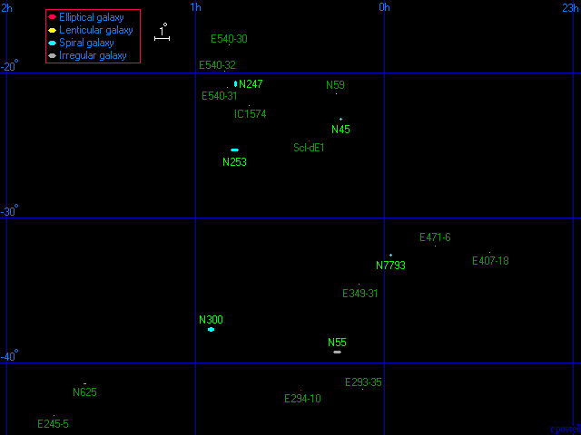
أدناه - ثلاث مجرات مرتبطة بمجموعة معمل النحات. NGC 7793 (يسار) هي مجرة حلزونية مضغوطة. NGC 45 (في الوسط) هي مجرة حلزونية صغيرة أخرى والتي تقع خلف مجموعة المجرات هذه. ESO 471-6 (يمين) هي أحد ألمع المجرات القزمة في هذه المجموعة.
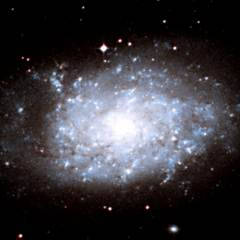 |
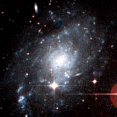 |
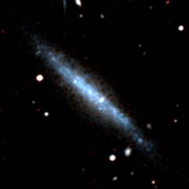 |
| NGC 7793 | NGC 45 | ESO 471-06 |
يوجد أدناه صورة NGC 55. وهي المجرة ذات الحجم الظاهري الأكبر في المجموعة لأنها أقرب المجرات الرئيسية في المجموعة. تعتبر NGC 55 مجرة لامعة غير منتظمة ذات حافة متعرجة وفيها الكثير من عمليات تشكل النجوم الجديدة.
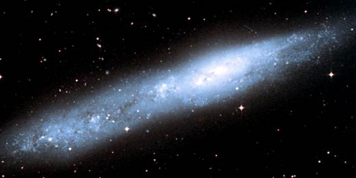
هذه قائمة بالمجرات الرئيسية في مجموعة معمل النحات المجرية. هذه ليست قائمة كاملة - إذ لم يتم دراسة العديد من المجرات القزمة في هذه المنطقة من السماء بشكل كاف. ومن الواضح أن NGC 253 هي المجرة المهيمنة في هذه المجموعة.
| الاسم | الإحداثيات الاستوائية | القدر الظاهري الأزرق | النوع | الحجم الزاوي (دقيقة قوسية) | الحجم (ألف سنة ضوئية) | السرعة الشعاعية (كم/ث) | أسماء أخرى |
|---|---|---|---|---|---|---|---|
| ESO 407-18 | 23 26.5 -32 23 | 14.7 | Irr | 1.5 | 5 | -220 | UGCA 438 |
| ESO 471-06 | 23 43.8 -31 57 | 13.8 | SBm | 3.5 | 10 | -12 | UGCA 442 |
| NGC 7793 | 23 57.9 -32 35 | 9.8 | Scd | 9.3 | 35 | -48 | - |
| ESO 293-35 | 00 06.9 -41 50 | 16.9 | Irr | 0.7 | 2 | -126 | - |
| ESO 349-31 | 00 08.2 -34 35 | 15.6 | Irr | 1.1 | 5 | -48 | SclDIG |
| NGC 45 | 00 13.9 -23 10 | 11.4 | SBd | 7.4 | 30 | +163 | - |
| NGC 55 | 00 15.0 -39 12 | 9.6 | SBm | 32.4 | 45 | -122 | - |
| NGC 59 | 00 15.4 -21 27 | 13.2 | S0 | 2.3 | 10 | +55 | - |
| Scl-dE1 | 00 23.9 -24 42 | 17.7 | E | 0.9 | 2 | ? | Sc 22 |
| ESO 294-10 | 00 26.6 -41 51 | 15.7 | E | 1.1 | 5 | -113 | - |
| IC 1574 | 00 43.1 -22 15 | 14.6 | Irr | 2.1 | 5 | +69 | DDO 226 |
| NGC 247 | 00 47.2 -20 46 | 9.7 | SBcd | 21.4 | 55 | -137 | - |
| NGC 253 | 00 47.6 -25 18 | 8.2 | SBc | 27.5 | 105 | -36 | - |
| ESO 540-30 | 00 49.4 -18 05 | 16.4 | Irr | 0.9 | 2 | ? | KDG 2 |
| ESO 540-31 | 00 49.9 -21 01 | 15.2 | Irr | 1.7 | 5 | +7 | UGCA 15, DDO 6 |
| ESO 540-32 | 00 50.4 -19 54 | 16.4 | Irr | 0.9 | 2 | ? | - |
| NGC 300 | 00 55.0 -37 42 | 8.8 | Scd | 21.9 | 45 | -94 | - |
| NGC 625 | 01 35.1 -41 26 | 11.6 | SBm | 5.8 | 15 | +195 | - |
| ESO 245-05 | 01 45.1 -43 36 | 13.3 | Irr | 3.6 | 10 | +214 | - |
العمود 1: الاسم المعتاد للمجرة.
العمود 2: إحداثي المطلع المستقيم من الحولية الفلكية 2000.
العمود 3: إحداثي الميل من الحولية الفلكية 2000.
العمود 4: القدر الظاهري الأزرق للمجرة.
العمود 5: نوع المجرة: E=بيضاوي، S0=عدسي، Sa,Sb,Sc,Sd=حلزوني، SBa,SBb,SBc,SBd=حلزوني قضيبي، Sm,SBm,Irr=غير منتظم.
العمود 6: القطر الزاوي الظاهري للمجرة (دقيقة قوسية).
العمود 7: قطر المجرة (بالآلاف من السنوات الضوئية).
العمود 8: السرعة الشعاعية للمجرة (كم/ث) نسبة إلى الخلفية الميكروية الكونية.
العمود 9: أسماء أخرى للمجرة.
Karachentsev I, Grebel E, Sharina M, Dolphin A, Geisler D, Guhathakurta P, Hodge P,
Karachentseva V, Sarajedini A, Seitzer P, (2003), Distances to nearby
galaxies in Sculptor, Astron Astrophys, 404, 93.
Jerjen H, Freeman K, Binggeli B (1998), SBF distances to Dwarf Elliptical Galaxies
in the Sculptor Group. Astron J, 116, 2873.
Cote S, Freeman K, Carignan C, Quinn P, (1997), Discovery of Numerous Dwarf Galaxies
in the Two Nearest Groups of Galaxies. Astron J, 114, 1313.
Schmidt K, Priebe A, Boller T, (1993), Nearby Galaxies. Astron Nachr, 314, 371.
The HyperLeda Database, (2003).
أدناه - مجرتان متشابهتان جدًا في مجموعة معمل النحات المجرية. (إلى اليسار) NGC 247 و (إلى اليمين) NGC 300 هما مجرتان حلزونيتان متوسطتا الحجم بالقرب من مقدمة هذه المجموعة.
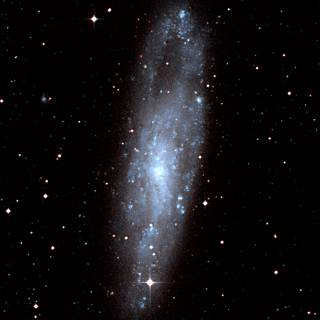 |
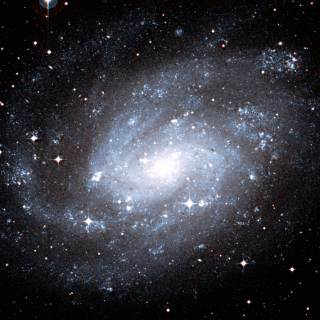 |
| NGC 247 | NGC 300 |
يوجد أدناه صورة NGC 253 - أكبر وألمع مجرة في مجموعة معمل النحات المجرية. NGC 253 هي مثال لمجرة النجوم المتفجرة - مما يعني أن لديها معدل تشكل نجوم عالي - وهي عملية ربما تكون قد تم تحريضها من خلال الكثير من انفجارات السوبرنوفا (النجوم المتجددة).
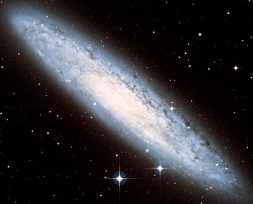
أدناه - ثلاث مجرات قزمة في مجموعة معمل النحات المجرية. (إلى يسار) ESO 407-18 هي مجرة قزمة غير منتظمة مثل NGC 55 وتقع في مقدمة تجمع مجرات معمل النحات على مسافة حوالي 6 أو 7 ملايين سنة ضوئية منا. (في الوسط) NGC 59 مجرة إهليلجية / عدسية صغيرة بالقرب من الجزء الخلفي من المجموعة. (إلى اليمين) IC 1574 هي مجرة قزمة غير منتظمة تقع أيضًا في الجزء الخلفي من هذه المجموعة.
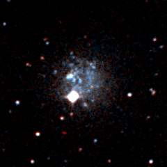 |
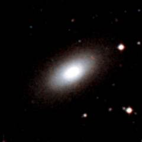 |
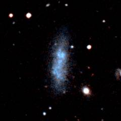 |
| ESO 407-18 | NGC 59 | IC 1574 |
| خصائص مجموعة معمل النحات المجرية | |
|---|---|
| الإحداثيات الاستوائية | RA=00h30m Dec=-30° |
| الإحداثيات المجرية | l=0° b=-85° |
| الإحداثيات المجرية الفائقة | L=265° B=0° |
| المسافة إلى مركز المجموعة المجرية | 9 مليون سنة ضوئية |
| عدد المجرات الكبيرة في المجموعة | 6 |
| الاسم البديل للمجموعة المجرية | مجموعة القطب الجنوبي للمجرة NGC 253 Group |